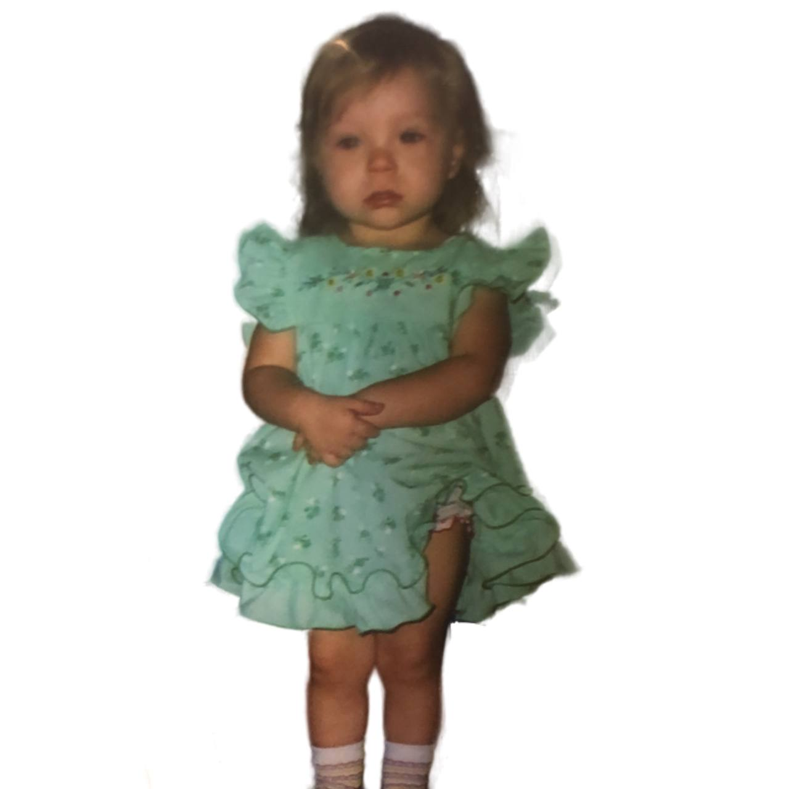
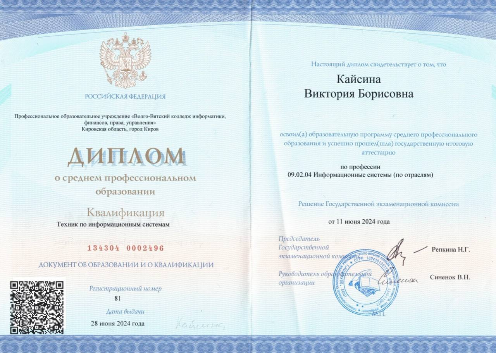
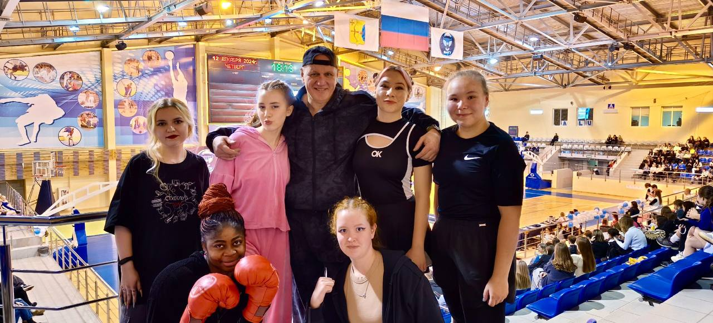
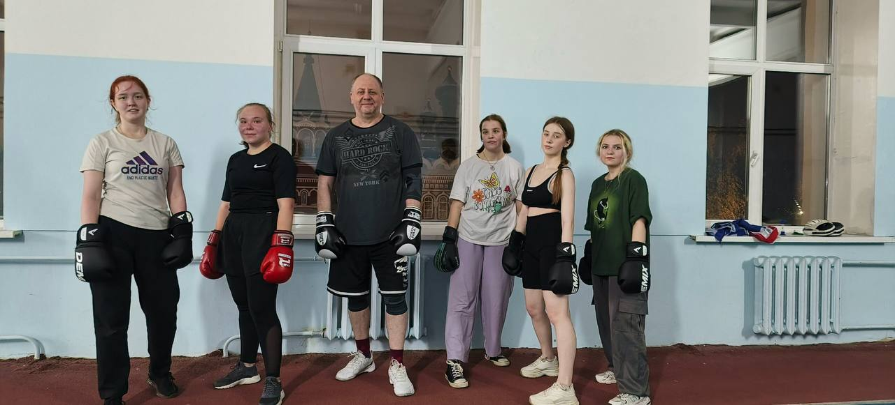

Обо мне
Здравствуйте, меня зовут Виктория. Я студентка ВятГу, обучаюсь на "Информационных технологиях и системах связи".

Это уже второе мое образование. Первое техническое образование я получила в колледже по специальности "Информационные системы".

С 10 лет и по сей день я занимаюсь разными боевыми искусствами: карате, кикбоксингом, тайским боксом, боксом. Не раз одерживала победы в значимых соревнованиях, но после 18 лет перестала участвовать где-либо и просто занимаюсь для себя.
В фотогалерею я поместила фотографии с разных соревнований.
ВятГУ открыл для меня Бокс, благодаря чему, я познакомилась с множеством интересных людей.

